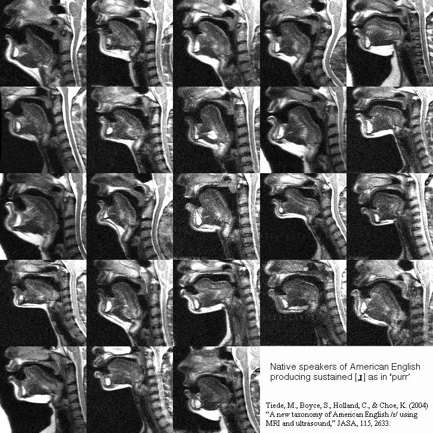
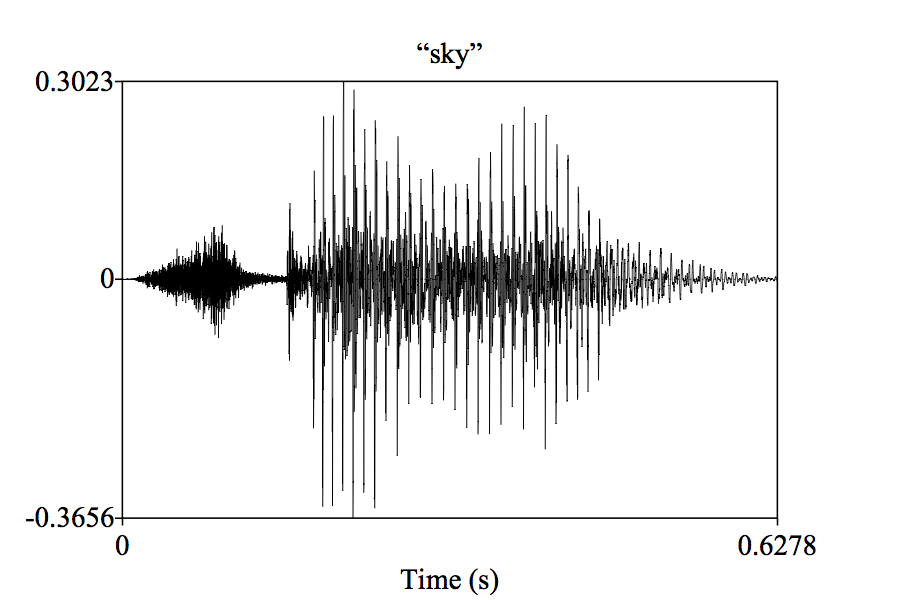
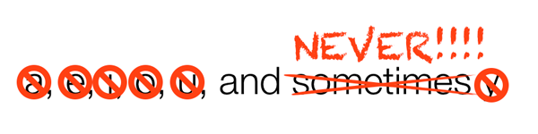
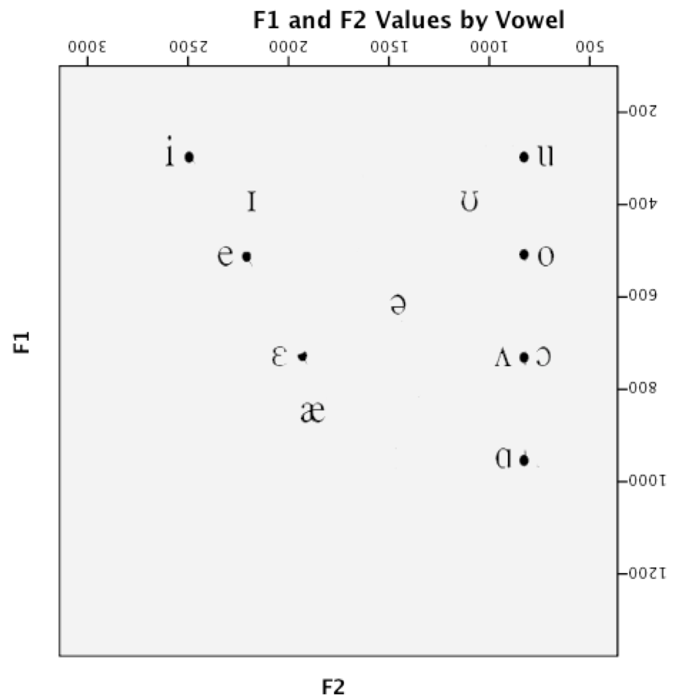
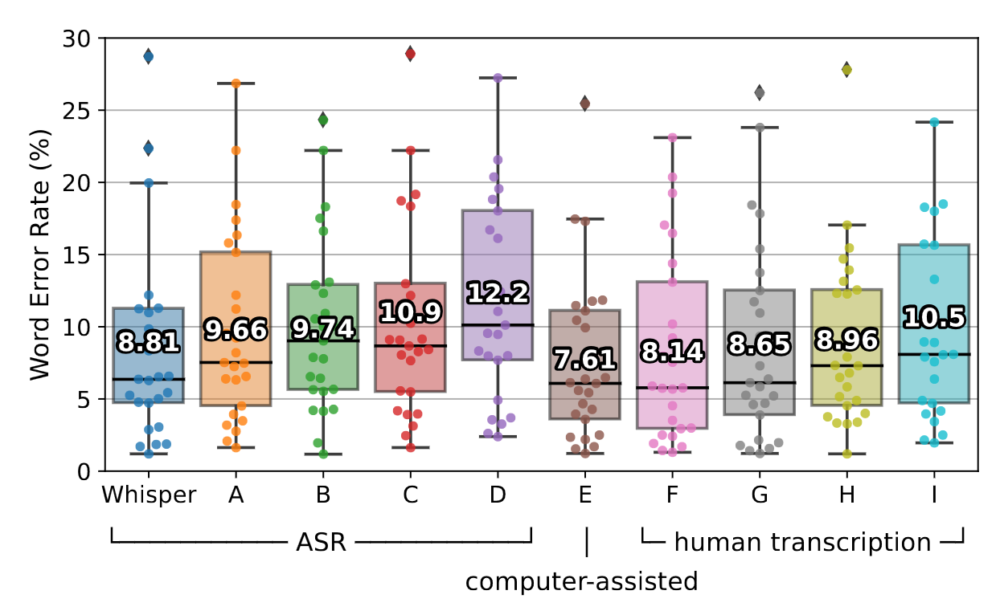

https://savethevowels.org/talks/colloq_cogs_speechlg.html
I have my BA, MA and Doctorate in Linguistics from the University of Colorado at Boulder
CU Boulder had the Institute of Cognitive Science
I went to their talks and was advised by an affiliate, but there was not a COGS major or Ph.D Specialization
This means I study human speech perception and production
This involves a mix of experiments, data analysis, recordings, and instrumental measurements
I collaborate lots with Dr. Sarah Creel
Siri/Alexa/GoogleAssistant
ChatGPT Voice Mode
Speech-to-Text Keyboards
Text-to-Speech (e.g. in Twitch streams)
Voice Activity Detection
Automatic Noise Filtering
Voice Compression and Encryption
Forced Alignment and Timestamping
Automatic Speech Recognition (ASR)
Speech Synthesis or Text-to-Speech (TTS)
They allow new kinds of human-computer interactions
They are incredible tools for accessibility
They’re great for processing large amounts of data
… but the most interesting part of these tools?
Why is speech so hard to produce?
How do computers produce speech?
Why is speech so hard to perceive?
How do computers perceive speech?
This is an incredibly intricate gestural dance in your mind and mouth
Let’s try it
First, focus on your jaw
Now, on your tongue
Now, feel the vibes


Speech is flapping bits of meat around in your head and throat while you expel air.
This creates tiny vibrations in the air, ca


Fluid movement of your mouth and tongue
Careful planning of air and breathing
Control of pitch, gestures, and other aspects
‘Speech Synthesis’ or ‘Text-to-Speech’ (TTS)
How do we do that?
“OK, the human gave me text, what do they actually want me to say?”
This part is usually done in Python
This is actually hard


(Thanks to Julia Hirschberg for this annotated chunk)
Concatenative or ‘Unit Selection’ TTS chops up bits and pieces of existing speech to create new speech
You record a huge database of speech from a voice actor, with optimum ‘coverage’
You then combine these words into sentences to match the text


Train a neural network with text and corresponding audio
Make it output something which can made into a wave very readily
Either make the wave directly, or make an intermediate representation which can be turned into a wave

We feed in text, and we get back a wave, with no humans involved past making training data!
The results are getting very, very good.
You can build a model from the ground up using any voice you’d like
If all your training data are from a bored Bostonian, you’ll end up with a bored Bostonian TTS voice
This is very expensive, though, and doesn’t scale well at all
All human beings are born free and equal in dignity and rights. They are endowed with reason and conscience and should act towards one another in a spirit of brotherhood.

(TacoTron2)
(ElevenLabs)
(Credit to Erick Amaro and Mia Khattar!)
(English)
(French)
(Spanish)
(Mandarin)
(Italian)
(Russian)
(Japanese)
Adenocarcinoma in Tubovillious Adenoma bona fide certiorari de jure collusion RICO ex post facto CVN AWACS Escapement Tourbillion Remontoir de Egalite
… and it’s never had a tongue, had phonics training, and doesn’t actually know anything at all about mouths
Arguably, it doesn’t know anything about English
This is amazing!
It’s like sometimes mezclo un poco de español con my English, cuando me siento particularmente spicy, y tengo curiosidad to know cómo la TTS handles it.
Not only can exposure to data allow a deep neural network to learn to map written language into speech in one language
… but it can do it for two languages
… at once
… with clear mixing of the two
Yet, here we are
Espicy!
Speech is flapping bits of meat around in your head and throat while you expel air.
This creates tiny vibrations in the air
Speech perception is turning the resulting vibrations in the air back into language
The task is to turn speech into equivalent text
This is really, really hard
What kind of vowels are we talking about?


A vowel is voicing passing through (and resonating in) an unobstructed vocal tract!
If we change the position of the tongue, we change the resonances

A vowel is voicing passing through (and resonating in) an unobstructed vocal tract!
If we change the position of the tongue, we change the resonances
Different resonances filter the sound differently and determine the vowel quality
Different tongue shapes create different resonances, and different vowels!

We talk about vowel quality in terms of “formants”
These are bands of the spectrum where the energy is strongest
The frequencies of these formants are our primary cues


F1 and F2 are generally considered to be the most important
F3 is good for rounding and rhoticity
 Different
American English vowels, as spoken by a male speaker
Different
American English vowels, as spoken by a male speaker

Different speakers produce different resonances, even for the “same” vowels
Different speakers produce different resonances, even for the “same” vowels
Speaker can have colds or allergies, can have more nasal voices…
Sociolinguistic factors galore
Every person has a different set of basic vowel formant positions


Even the same speaker will have variation from moment to moment
Sometimes we misarticulate, accidentally making the wrong vowel quality
Or we talk with food in our mouths, producing different resonances
Or sometimes, we’re just plain lazy
This leads to constant and massive changes in vowel production


Normalization is a process that “happens”
You meet somebody, you create a model of their vowel space, and you move on
These models of speaker vowels are maintained in memory
One model per person, and a new model each time!
We’re using our senses to form a model of reality, including inside the mouth
We don’t really care about the acoustics per se, just estimating the gestures
“Based on everything I’m hearing, this seems like she’s making the same tongue shape I hear in /i/”
This includes lots of adjustments ‘for free’
We store information from every vowel we hear!
Normalization is then just bulk comparison and probability
Perhaps we also segment by speaker, dialect, language, etc

We feed the system lots of text, and lots of corresponding audio
It learns the patterns of sound associated with a given text
Some use language models to give better predictions
In the HMM days, ASR software required personalization and ‘training’
Setup began with “Read these texts aloud”
The model simply wouldn’t work without this level of customization

It works relatively quickly
On relatively low-end hardware
… and most amazing of all…
